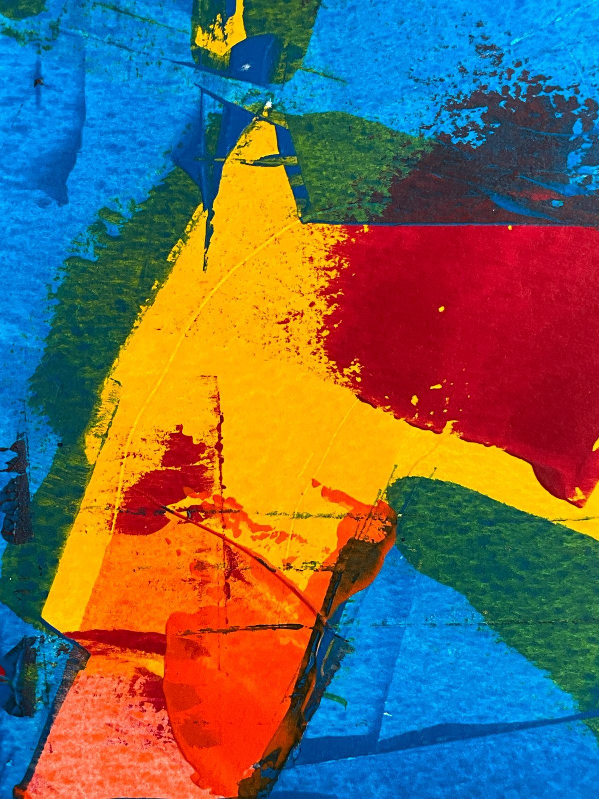
Tideline I
Acrylic on canvas · 60 × 80 cm
Available
Abstract paintings about water, weather and the edges of paddocks, made in a small studio by the river.
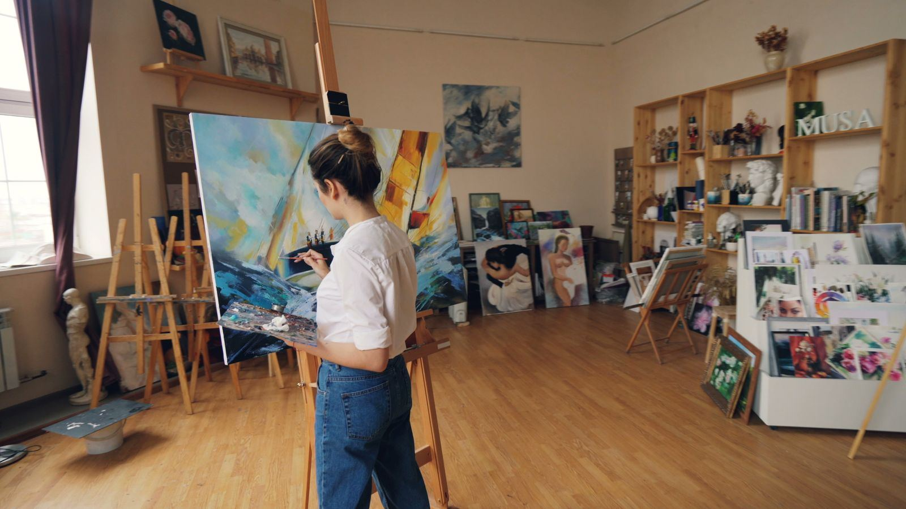
Six paintings made over one wet winter, built up in thin layers and scraped back.

Acrylic on canvas · 60 × 80 cm
Available
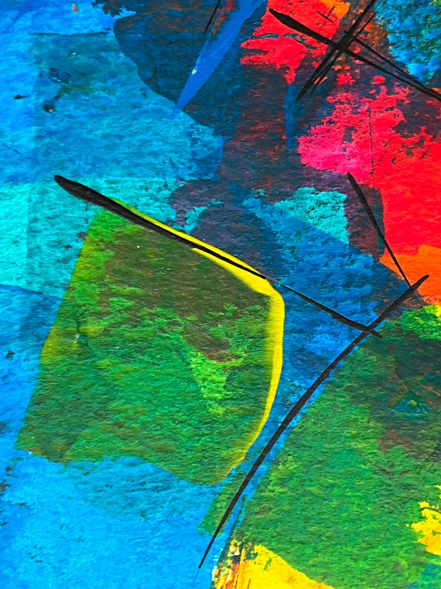
Acrylic on canvas · 60 × 80 cm
Sold
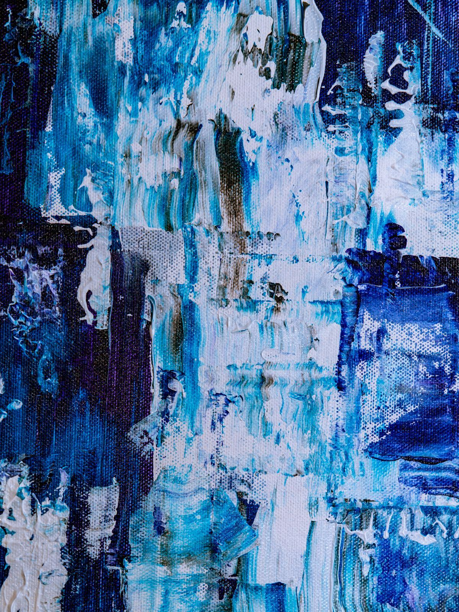
Acrylic and ink · 45 × 60 cm
Available
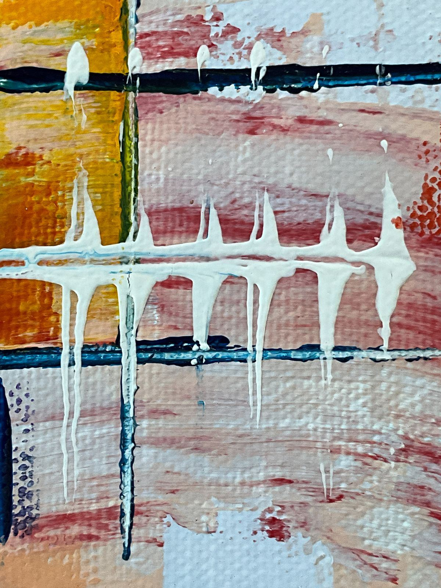
Oil on linen · 60 × 80 cm
Available
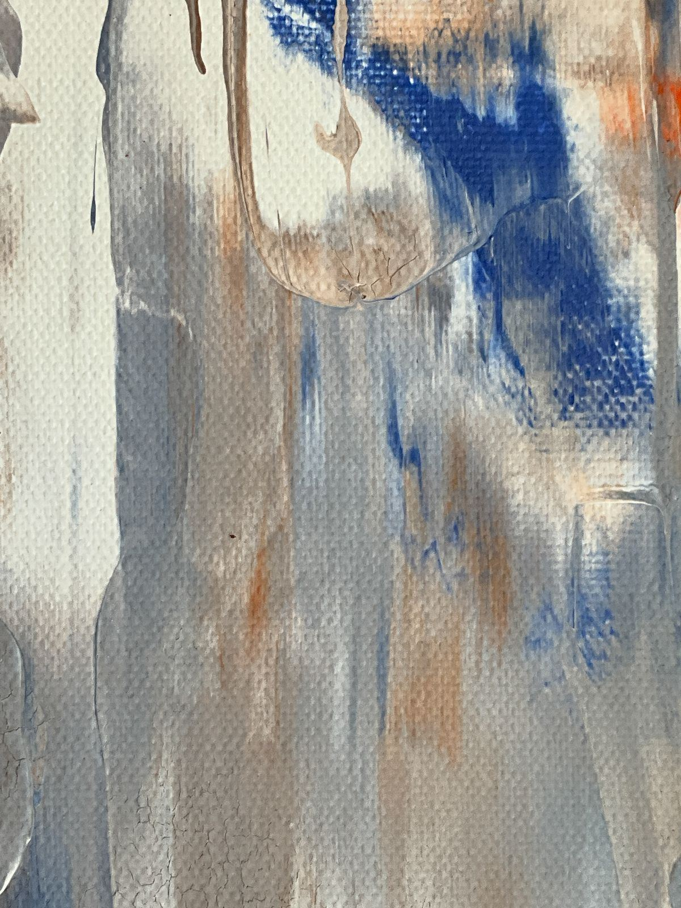
Acrylic and plaster · 45 × 60 cm
Sold
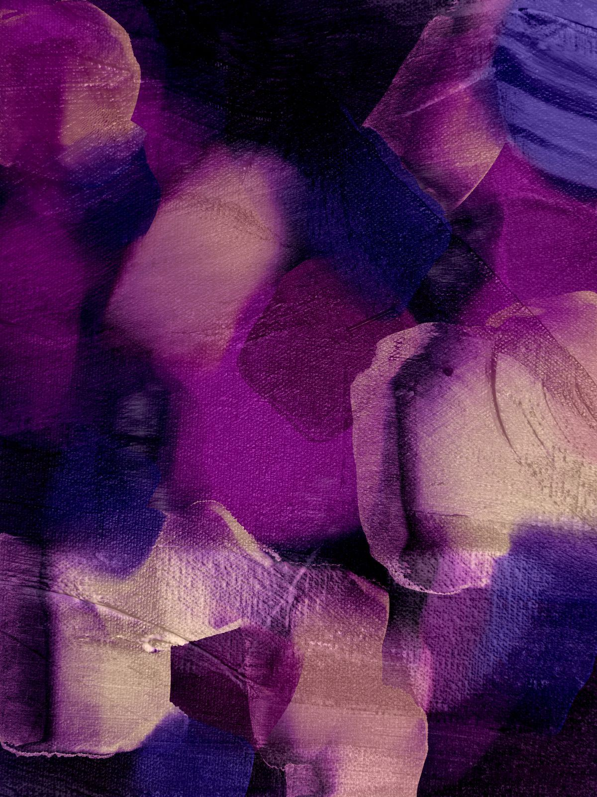
Oil on canvas · 90 × 120 cm
Available
“I want a painting to feel like the moment the tide turns: nothing has happened yet, but everything is about to.”
From the artist statement
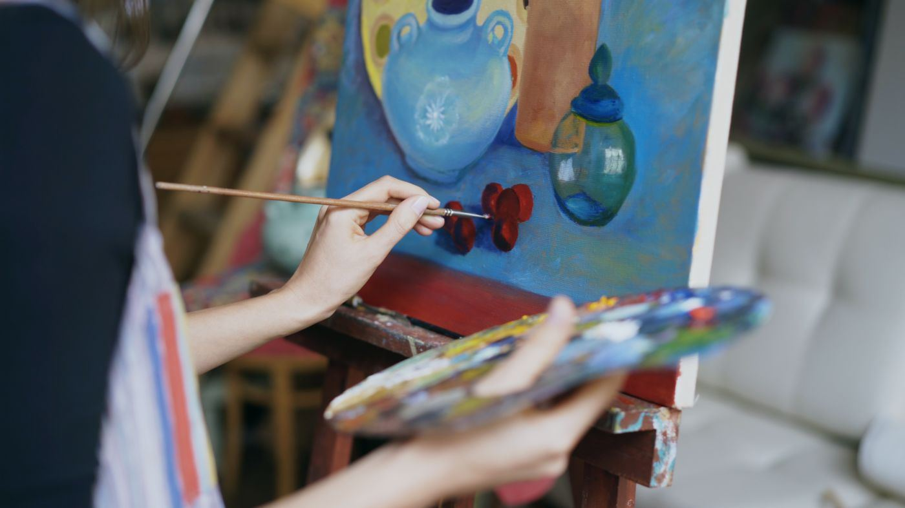
Six weeks chasing the colour of the river after rain.
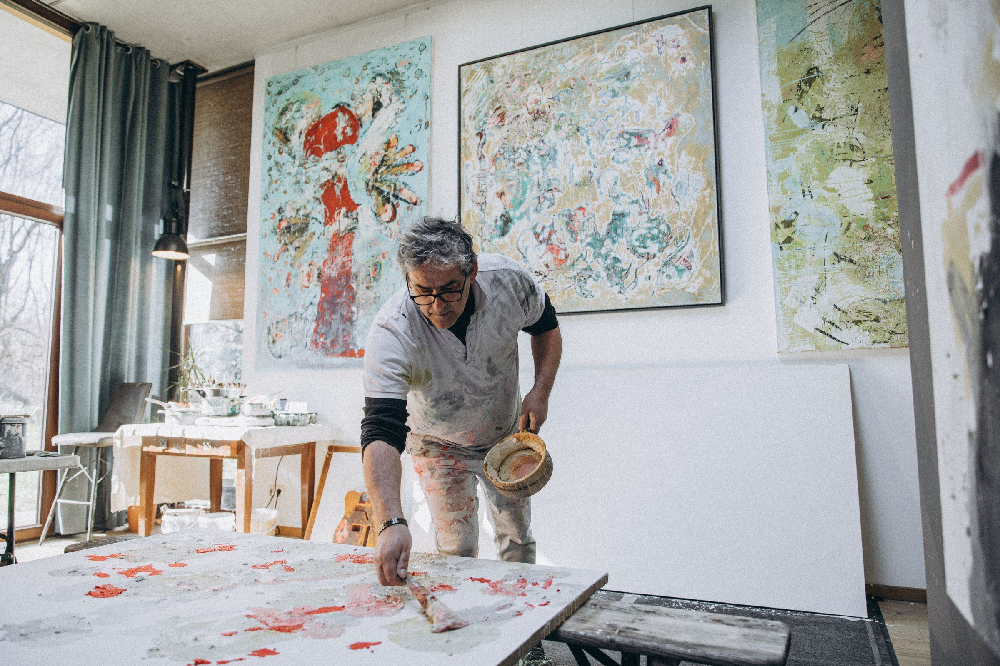
An afternoon with a painter who works on the floor, never the easel.
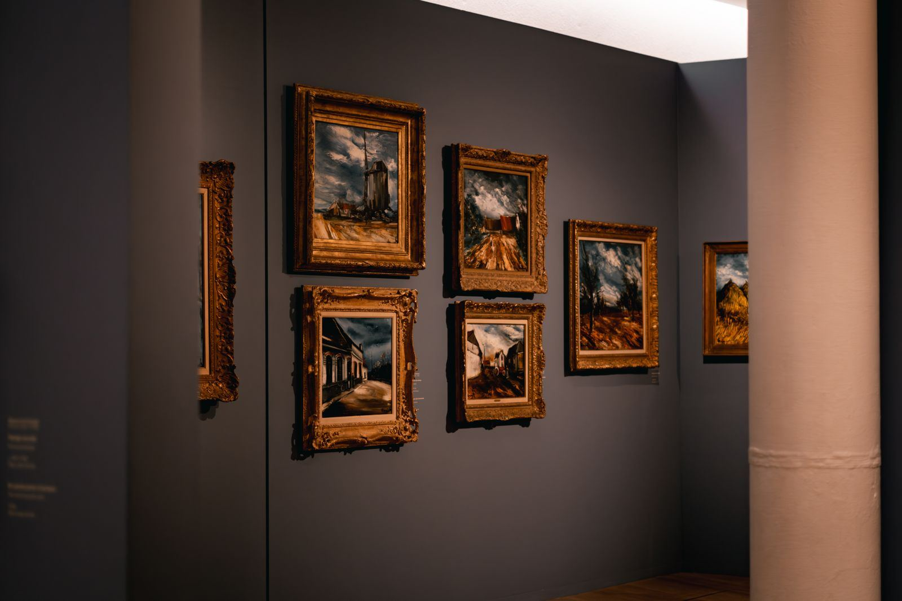
Painter working in acrylic and oil. Juno studied printmaking, worked as a set painter for ten years and has painted full time since 2019. Originals, commissions and studio visits by appointment.
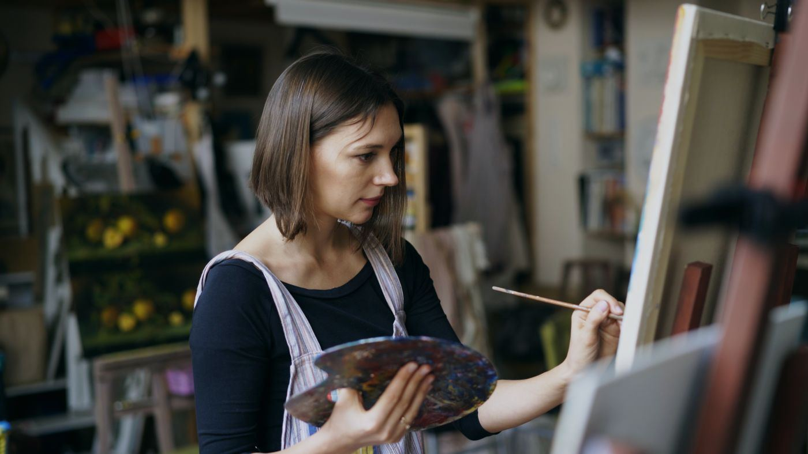